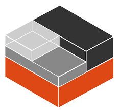

The most advanced Penetration Testing Distribution Kali Linux is an open-source, Debian-based Linux distribution geared towards various information security tasks, such as Penetration Testing, Security Research, Computer Forensics and Reverse Engineering.
Linux containers provide features like snapshots and freezing which comes in very handy when developing or testing software. LXD is the more convenient of the two but is only available in Ubuntu or other distributions (such as Kali) as snap package. LXC is available in more distributions and preferred in Kali as it is supported natively and does not required snapd to be running.
Click the button below to download the file:
Download ScriptInstructions: Just download and "sudo ./create_kali_container.sh" and wait for few min.... finally ready your Kali container